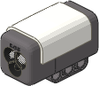
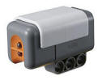

(G) Using the Color Sensor
The programs in this section show different ways to
use Multi-Bot's Line Sensor and
Ball Trap Sensor
attachments, which both use the NXT 2.0 Color Sensor.
| Note: The Color Sensor
programs require the NXT 2.0 Color Sensor and the software
that comes with the NXT 2.0 Retail kit (8547) or the LEGO
Education NXT-G 2.1 software. These programs cannot be
used as-is with the standard Light Sensor, other color
sensors, or with other versions of the NXT software.
For programs using the Light Sensor,
see Using the Light Sensor. |

NXT 2.0 Color Sensor |

Light Sensor |
Color Sensing
The Color Sensor with Action set to Color
Sensor can distinguish six different colors (black, blue, green,
yellow, red, and white).
|
Program |
Description and Observations |
Attachments |
| G1-FindColor |
|
 |
|
This
program shows the simplest way to use the Color Sensor, which is
to the Wait for Color Sensor block. A Move
Unlimited block starts the robot driving forward, then
the program continues to the Wait for Color Sensor block,
which will wait until the sensor sees Black, then a Move
Stop block stops the robot. Try
making a black line on a light-colored floor with black
electrical tape, then start the robot facing perpendicular to
the line at any distance away. It should stop right at the
line. |
Treads
Line Sensor |
| G2-SumoColor |
|
|
|
This
program extends the G1-FindColor
program to make the robot back up and turn when it sees a black
line, and then the whole sequence is repeated in a Loop.
Now if you make a large black square (or any
shape) with electrical tape on a light-colored floor and start
Multi-Bot inside the box, it will try to drive around inside the
box "bouncing off" the borders and staying inside.
Staying inside an area marked with a colored
border is the first step in playing a "Robot Sumo" game, where
two robots try to push each other outside of the "ring".
You can play a simple practice Robot Sumo game with one
Multi-Bot robot by placing various objects inside the ring with
the robot, and see if Multi-Bot with an attachment such as the
Sumo Pusher can push them all
outside of the ring while staying inside itself. Try
changing the time of the back up and the angle of the turn in
the LeftPivotAngle block to get different driving
patterns and see which work best. |
Treads
Line Sensor
Sumo Pusher
(Optional) |
| G3-ColorDrive |
|
 |
|
This
program can make Multi-Bot drive along a road or course marked
by different colored borders which cause different actions, as
follows:
- When the Color Sensor sees blue,
Multi-Bot will turn left until it is off of the blue color.
- When the sensor sees green, Multi-Bot
will turn right until it is off of the green color.
- When the sensor sees Red, Multi-Bot will
stop.
- All other colors will make Multi-Bot
drive forward.
If you start on a neutral-colored floor (test
to make sure the G3-ColorDrive program drives
straight on it first), then you can use colored electrical tape,
painters tape, or tape down strips of colored construction paper
to mark the borders of the course. Put blue on the right
border, green on the left border, and red at the end, and
Multi-Bot will try to drive the course on its own. |
Treads
Line Sensor |
| G4-ColorFollow |
|
|
|
This
program is a very simple "line follower" using the Color Sensor.
If you put a black line with electrical tape on a light-colored
floor, then Multi-Bot will slowly follow the line, even if the
line has curves in it.
Note that in this kind of line following, the
robot is actually following the right edge of the
line, not down the middle of the line as you might expect.
The robot tries to keep the black line just to the left of the
sensor and the open floor to the right of the sensor, by
zigzagging back and forth on either side of the edge,
alternately seeing the line and the floor.
This line follower is very simple but slow.
Faster line following technique are shown in the
Using the Light Sensor Mode section below. |
Treads
Line Sensor |
| G5-ColorSpeak |
|
 |
|
This program
will make the NXT speak the names of colors that the Color
Sensor sees (e.g. "Blue") and also display the color names on
the screen. You can use the Color Sensor
in any configuration where it can get close to different
objects. Hold it over objects of different colors to see
and hear the results. |
Line Sensor
(or loose Color Sensor) |
| G6-BallTrap1 |
|
|
|
This
program will make Multi-Bot with the
Ball Trap Sensor drive
forward until a ball enters the trap, then Multi-Bot will stop
and speak the name of the ball color that it found.
Sensing small round objects is actually
challenging for the Color Sensor, so you may find cases where
the sensor reports the wrong color. In particular, red and
green balls may be mistaken for yellow. Give it a try and
see how well it works for you. |
Treads
Ball Trap
Sensor |
| G7-BallTrap2 |
|
|
|
This
program makes an improvement to the G6-BallTrap1 program by ignoring yellow balls, because
yellow is often confused with other colors. Now if you try
the challenge with only blue, green, and red balls, it should be
more reliable. |
Treads
Ball Trap
Sensor |
| G8-BallGolf |
|
|
|
This
program is designed to get Multi-Bot to drive up to a blue or
green ball, trap it with the
Ball Trap Sensor, then hit it with the
Golfing Arm.
Start the program with the golfing arm in the
straight down position, and a green or red ball in front of
Multi-Bot so that it will enter the trap. Short carpet on
the floor works best.
In order to re-position the robot for hitting
a ball after trapping it, the program uses a combination of
Move and Motor blocks with the Duration set to
certain Degree measurements. This kind of movement
is called "Dead Reckoning" and is sensitive to the kind of
surface used (carpet, smooth floor, etc). If Multi-Bot is
missing the golf balls, try adjusting the Degree values
used. |
Treads
Ball Trap
Sensor
Golfing Arm |
| G9-BallHunt |
|
|
|
This
program extends the G8-BallGolf
program to make Multi-Bot try to find its own golf balls (green)
among a set of blue and green balls placed around it, and hit
the green ones but leave the blue ones alone.
Start the program with the golfing arm in the
straight down position, and a a few green and blue balls close
by at different angles. Short carpet on the floor works
best.
Multi-Bot will drive out straight to try to
find a ball (but will give up if it doesn't find a ball in a
certain distance). If it finds a blue ball, it will leave
it alone and back up to the starting position, turn a bit, then
head out again looking for another ball. When it finds a
green ball, Multi-Bot will try to hit it then return to the
starting position to look for more balls. |
Treads
Ball Trap
Sensor
Golfing Arm |
Line Following in Light Sensor
Mode
The Color Sensor with Action set to Light
Sensor will detect the overall brightness of light detected and
output a number from 0-100 which indicates the brightness (0 = darkest,
100 = brightest).
|
Program |
Description and Observations |
Attachments |
| G10-LineFollow |
|
|
|
This
program shows a simple way to make a line following program
using the Color Sensor in Light Sensor mode. If you
put a black line with electrical tape on a light-colored floor,
then Multi-Bot will follow the line, even if the line has curves
in it. The robot will follow the right edge of the
line, as explained for the G4-ColorFollow program above. The
G10-LineFollow program is very
similar to the simple line following program
G4-ColorFollow, which used the
Color Sensor in color-sensing mode, except that now the Color
Sensor Switch is configured to test for total brightness in
Light Sensor mode, and therefore must test for a specific
brightness threshold value in the Compare field.
The brightness threshold value specified in
G10-LineFollow is set at 36,
but you may need to adjust this value depending on the lighting
conditions for your test and other factors. Although using
the Color Sensor in Light Sensor mode will ultimately be
more powerful for line following and similar tasks (see later
programs below), the need to determine an appropriate brightness
threshold adds an additional complication. See the
G11-DispLight program below for
a method of determining a good threshold value.
Another difference between the
G10-LineFollow program and the
G4-ColorFollow program is that
instead of stopping the inside motor while turning back towards
the line, G10-LineFollow runs
the inside motor at a low power. This makes the driving
smoother and faster. You can also easily adjust the speed
and smoothness by adjusting the power levels used.
|
Treads
Line Sensor |
| G11-DispLight |
|
|
|
When
using the Color Sensor in Light Sensor mode, it is often
necessary to measure brightness values from the sensor
beforehand in order to estimate good values to test for (see the
G10-LineFollow program above).
Since the View feature on the NXT brick
menu, where you would normally measure sensor values, does not
support the Color Sensor in Light Sensor mode, the
G11-DispLight program is
included here to display measured values from the Color Sensor
in Light Sensor mode.
To determine a good brightness threshold value
for line following (e.g. for G10-LineFollow), do the following:
-
Run the
G11-DispLight program on
the final robot configured as it will be for the line
following.
-
Position the
robot with the Color Sensor directly over the black line.
Rest the robot directly on the ground as if it were driving.
The distance from the sensor to the ground is very important
to the measurement, so do not hold the robot off of the
ground in your hands.
-
Move the robot
back and forth slightly until the displayed brightness value
is as low as possible. This is the minimum
brightness value that the sensor will expect to see while
line following. Make a note of this number.
-
Position the
robot on the floor far away from the black line and note the
new number measured. This is the maximum
brightness value that the sensor will expect to see while
line following.
-
Take the
average of the minimum and maximum values you
measured and use this for your brightness threshold value:
threshold = (minimum
+ maximum) / 2
The
G11-DispLight program also
introduces the DisplayNum My Block, which provides a
convenient way to display a number on the NXT screen with a
label in front, which is useful in a variety of different
situations. |
Treads
Line Sensor |
| G12-LineFollow2 |
|
 |
|
This
program uses the same simple motor control for line following as
the G10-LineFollow program,
except that it shows a way to calibrate the Color sensor
readings, which provides a way to make programs that don't
depend on "hard-coded" threshold numbers such as the number 36
in the G10-LineFollow program.
Instead of needing to measure the threshold ahead of time and
modify the program, you can now measure the light readings right
before the run, and the G12-LineFollow2 will use them without needing to modify (and
recompile and re-download) the program.
Although the NXT programming software contains a "Calibrate
Sensors" tool in the Tools menu, this tool does not support the
Color Sensor (only the older "Light Sensor"). So
G12-LineFollow2 introduces a
set of My Blocks that you can use to conveniently calibrate the
Color Sensor in Light Sensor mode and use the calibrated
readings in your programs.
The CheckLightCal My Block will ask you
on the NXT screen whether you would like to do a new
calibration. If the robot and lighting conditions have not
changed since the last time you calibrated it, you can skip the
re-calibration and the program will re-use the measured values
from the last calibration, which are stored in a Data File.
Note that the first time you run it, it will force you to
calibrate and not ask, since there is no existing calibration
data. The CheckLightCal My Block
internally uses another My Block named CalibrateLight
which will lead the user through the calibration sequence.
To use the calibration, do the following:
-
When prompted
to measure the Darkest (Min) value, position
the robot with the Color Sensor directly over the black
line. Rest the robot directly on the ground as if it
were driving. The distance from the sensor to the
ground is very important to the measurement, so do not hold
the robot off of the ground in your hands.
-
Move the robot
back and forth slightly until the displayed Min value
is as low as possible. Press Enter to record the
Min value.
-
When prompted
to measure the Lightest (Max) value, position
the robot on the floor far away from the black line and
press Enter to record the Max value.
The LightCalibrated My Block
automatically retrieves the Min and Max values
stored by the CheckLightCal / CalibrateLight My
Blocks and uses them to provide a calibrated brightness
reading as a Percent to the program. The Percent
is calculated so that 0 is output for the darkest value
expected, and 100 is output for the brightest value
expected. This means that 50 is always a good
threshold to use for a dark/light transition, regardless of the
lighting conditions (if calibrated to the conditions ahead of
time).
A program using the LightCalibrated My
Block can use 50 as a simple dark/light threshold value,
or for added convenience, the LightCalibrated My Block
also outputs a Dark output (type Logic) that is
True if the calibrated brightness (Percent) is < 50.
The Dark output from LightCalibrated
is used by the G12-LineFollow2 program to
choose the turning direction from a Logic Switch, and the
Percent value is displayed on the screen using the
DisplayNum My Block so you can see the calibrated brightness
readings during the line following. |
Treads
Line Sensor |
| G13-LineFollow4 |
|
|
|
This
program extends the G12-LineFollow2 program to use more detailed motor control
for the line following, which will allow it to drive faster and
smoother but still be able to take tight turns when necessary.
The G12-LineFollow2 program is an example of a "Two State" line
follower, because it chooses from two different motor settings
(turn left or turn right) depending on the brightness seen from
the sensor. A limitation of a two state line follower is
that it can only do one kind of turn in each direction. If
you make the turns gradual, it will drive smoothly but not be
able to follow tight turns in the line. If you make the
turns tight, it will be able to follow tight turns in the line
but will drive slowly and zigzag a lot even when the line is
straight.
The "Four State" strategy in
G13-LineFollow4 will choose
between four different kinds of turns (sharp right, gradual
right, gradual left, sharp left) depending on the sensor value.
This will allow it to use the gradual turns when close to the
line edge (when the line is mostly straight) but switch to the
tight turns when the sensor falls away from the edge, as will
happen for tight turns in the line.
In order to divide the sensor values into four
useful ranges, it is necessary to know the exact range of values
expected, which is why the calibration provided by the
CheckLightCal and LightCalibrated My Blocks is
important. When the sensor values are known to be from 0
to 100, the program can easily assign a tight turn to the last
10% of the top and bottom of the range, but use gradual turns
elsewhere.
You can try adjusting the motor speeds used in
the four different kinds of turns used in
G13-LineFollow4 to change the
response to suit different robots and different courses. |
Treads
Line Sensor |
| G14-ProFollow |
|
|
|
This
program shows a mathematical approach to line following that is
the logical extension of the technique used in
G13-LineFollow4, where
different sensor readings result in different tightness of
turns. This approach is called a "Proportional" line
follower and produces results that are superior to a two state
or four state line follower. Thinking
about how the "Four State" line follower in
G13-LineFollow4 works, can
you imagine an "Eight State" approach with four different
degrees of turn tightness in each direction? How about
even more states? Programming each of these states
individually would be very tedious. Fortunately, we can
come up with a mathematical relationship between the sensor
reading and the motor power desired and simply calculate the
motor power based on the sensor reading directly, without the
need for any Switch blocks to separate the cases.
In the G14-ProFollow program, Math blocks are used to
calculate a motor response for each possible sensor reading, so
that the amount of turning is proportional to the
approximate distance that the sensor is away from the edge of
the line that it is following. The farther away from
center, the tighter the turn. The approximate distance
from the center of the line is calculated as the difference
between the expected sensor reading at the center (50) and the
actual sensor reading.
Understanding the math behind this approach
may be harder than understanding the
G13-LineFollow4 program, but
note that the resulting program is actually simpler in some
ways, and it should result in much better line following. |
Treads
Line Sensor |
[Back to Programs Index]
|